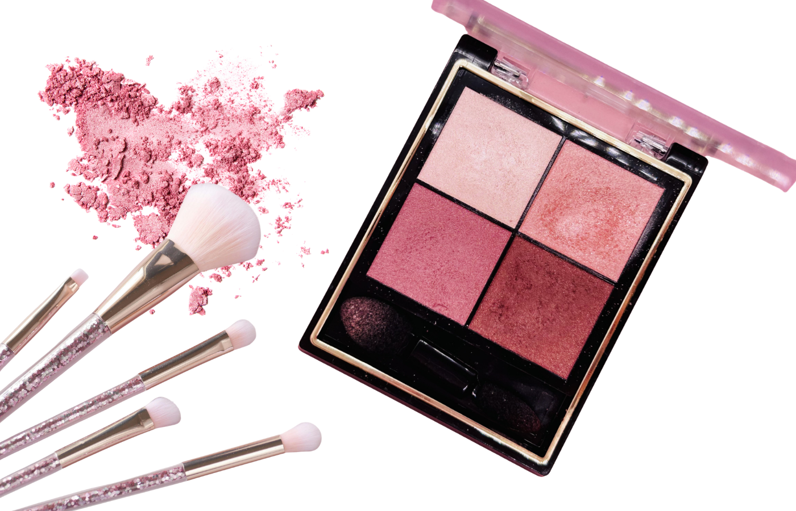
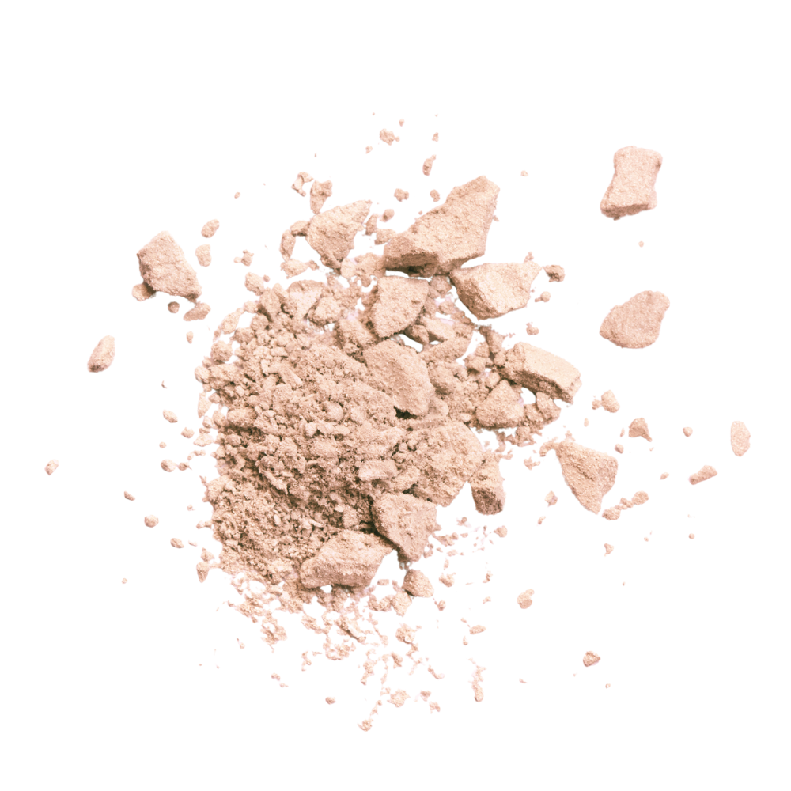
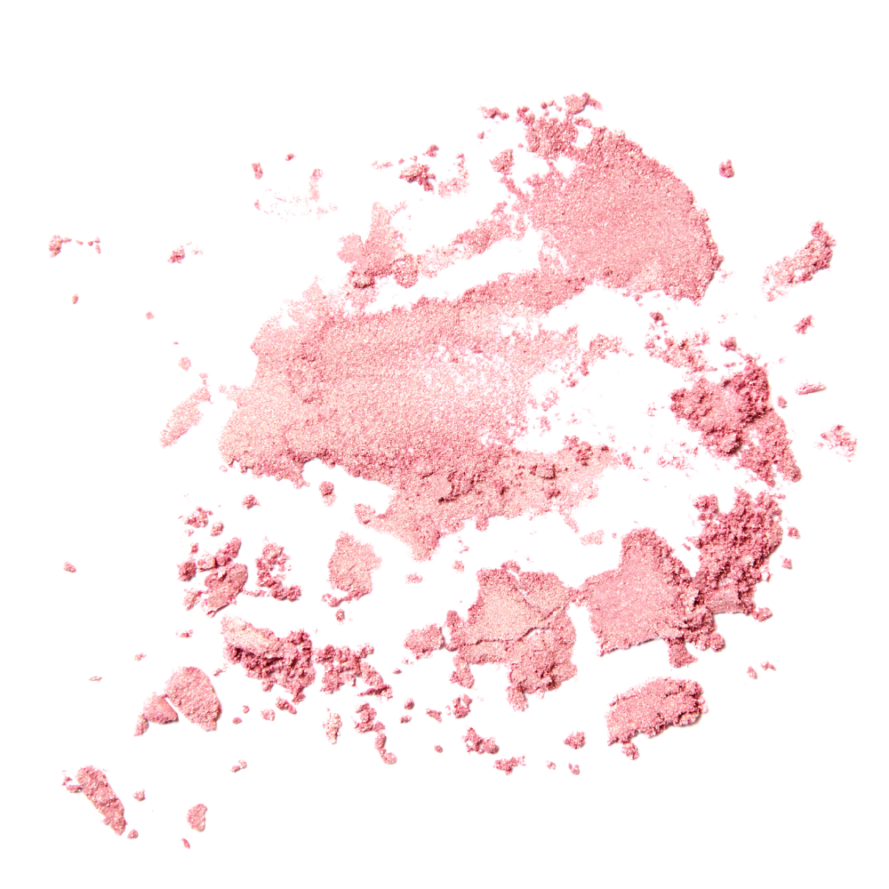
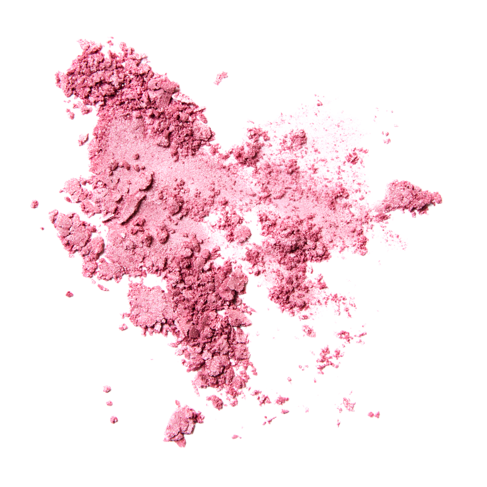
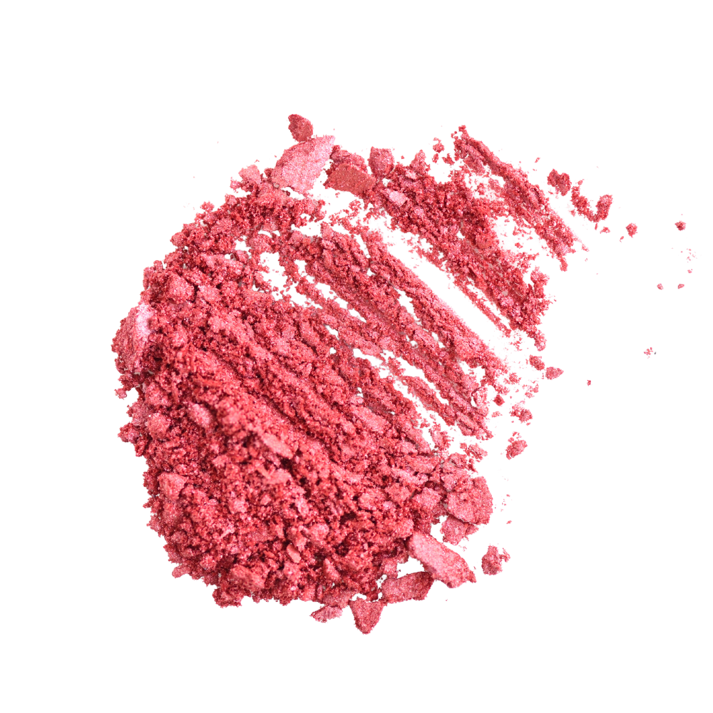
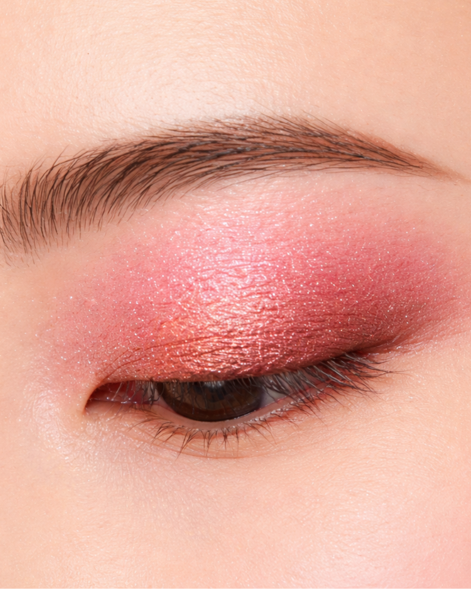
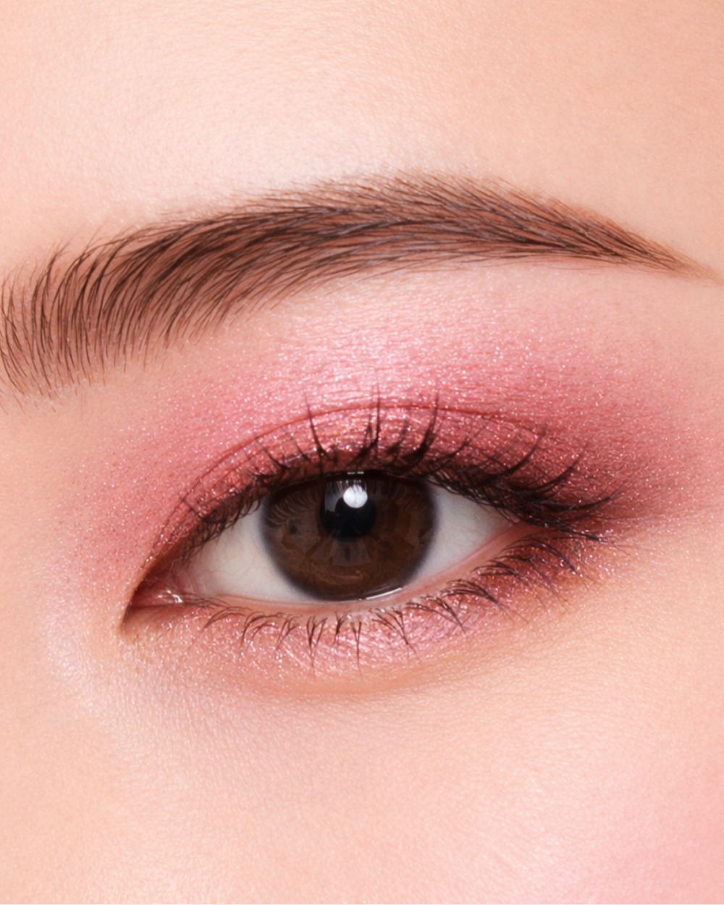

春らしい華やかさを添えるピンクトーン
春らしい華やかさを添えるピンクトーンが、やわらかくまぶたに溶け込み、軽やかなきらめきと血色感をそっと引き出します。

使いやすい4色パレット
春に使いたいピンクカラーを集めた4色パレット

ふんわり可愛い雰囲気
ふんわり甘い春ピンクがまぶたをやさしく包み込み、自然な血色感をプラス。ひと塗りで、思わず笑顔になれる愛らしい目元に。
NEW EYESHADOW COLLECTION

01 Pale White

02 Spring Pink

03 Cherry blossom Pink

04 Red Cherry
春らしい華やかさを添えるピンクトーンが、やわらかくまぶたに溶け込み、軽やかなきらめきと血色感をそっと引き出します。

春に使いたいピンクカラーを集めた4色パレット
ふんわり甘い春ピンクがまぶたをやさしく包み込み、自然な血色感をプラス。ひと塗りで、思わず笑顔になれる愛らしい目元に。
“
まぶたそのものがほんのり染まったみたいに
きゅるんと輝く目元に
透明感あふれるきれい色が、落ちにくく長時間キープ

